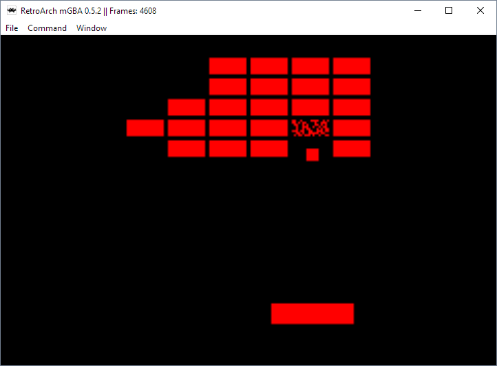

Breakout (mode 3)

Controls:
A: Send ball (when first starting or after missing ball)
Left: Move paddle left
Right: Move paddle right
Concept:
This project, like the animation, is designed to exercise working with the most basic set of tools (pixels) and working under hardware constraints. The complexity of a mode 3 game is limited by the time it takes to render. In this example, I chose to model the game Breakout since it consists of very few moving parts. Another hardware limitation that becomes apparent in Breakout is the lack of floating point precision. Using floating points would be too slow, and although it is possible to get around this limitation with fixed-point arithmetic, it wasn't necessary for the purposes of this project (I ended up using fixed-point arithmetic in a lesson to create jumping physics).
To give this project something interesting, I loaded the array that stores the bricks with a number corresponding to the amount of pixels per block. When the ball hits a brick, random pixels within the brick get set to black, decrementing the number of pixels in the brick. Once the amount of pixels is lower than a certain cutoff, the brick is erased. The ball isn't allowed to interact with a brick that doesn't have a value in the data structure of at least a full brick of pixels, and it is trivial to change these interactions using methods like this one, which incorporates further logic without the cost of additional memory or re-processing.
Credits:
Source referenced: TONC